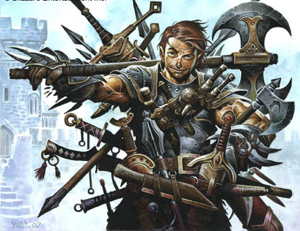
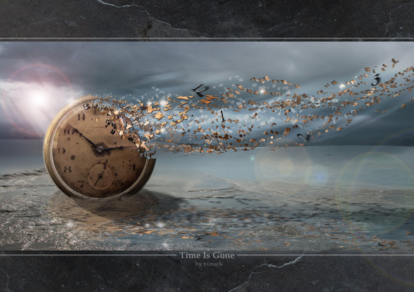
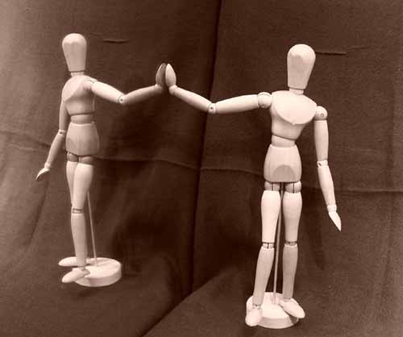
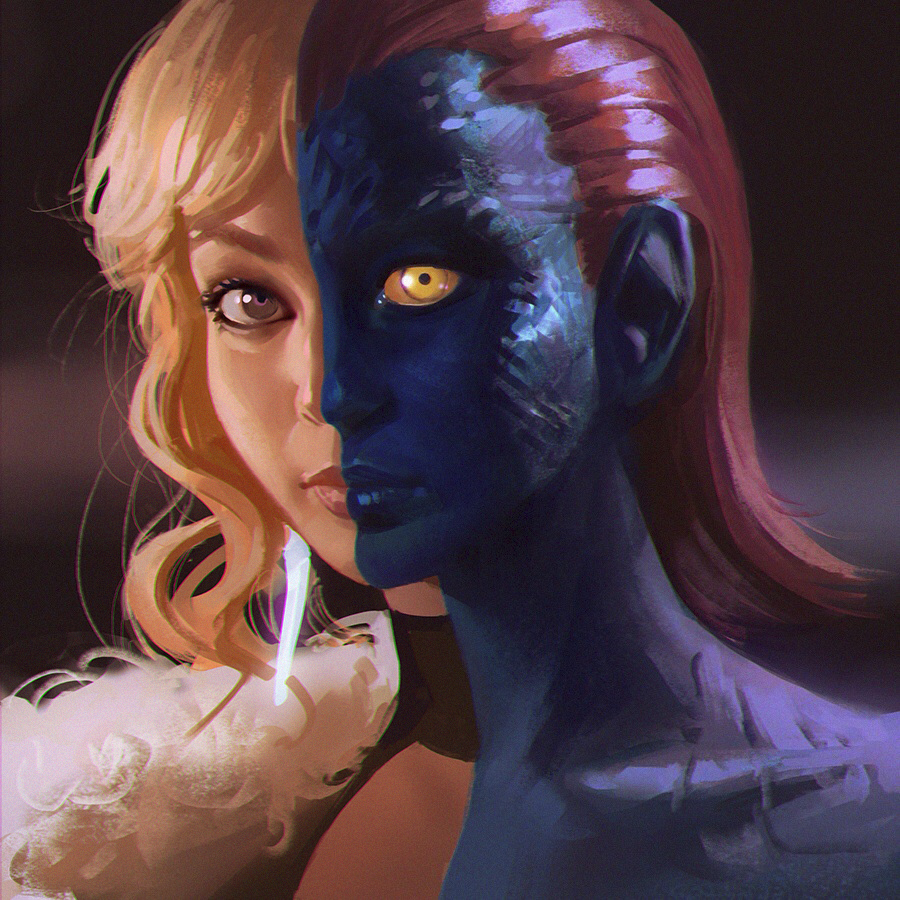
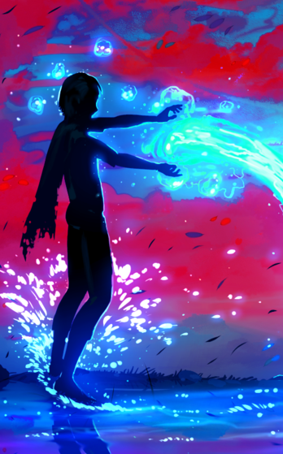

Summon
[The Fool: Cost 3]
You can create a sentient homunculus, whose physical appearance is that of a person but it doesn't need to eat or drink and it's durable enough to resist being pierced by low caliber bullets.
There can be only one homunculus at any time and takes 10 minutes to be able to recast the ability.
#Rank C: It can manipulate and create crystals,
#Rank B: While the homunculus is alive, you share the same abilities as theirs.
#Rank A: The homunculus is able to manipulate fire,earth and water, to a degree that throwing boulders, the size of your own house, is taxing but doable.
#Rank S: The homunculus is able to manipulate gravity in one set area, 200 meters radius, making it vary from 1% to 200%. |
 Conjure
[The Magician : Cost 4]
#Rank C: You can replicate any non-supernatural object you find for 1 minute, as long as it's weight doesn't surpass half of yours, it takes 60 second to be able to recast the ability.
#Rank B: You can replicate any non-supernatural object you find for as much time as you want, as long as it's weight doesn't surpass half of yours, it takes 15 second to be able to recast the ability.
#Rank A: You can replicate any non-supernatural object you find for as much time as you want, as long as it's weight doesn't surpass double of yours, it takes 15 second to be able to recast the ability.
#Rank S: You can replicate yourself, at maximum only five copies can exist at any time, you and your copies can communicate telepathically and share the same recast time for abilities, the copies last 30 minutes and it takes 5 minutes to be able to recast the ability. |
 Restore Restore
[The Hanged Man : Cost 3]
#Rank C: You can heal injuries that may have befallen someone else, it takes 60 seconds to fully heal serious injuries and it takes 20 seconds to be able to recast the ability after the effect is over.
#Rank B: You can heal injuries that may have befallen someone else, it takes 20 seconds to fully heal serious injuries and it takes 10 seconds to be able to recast the ability after the effect is over.
#Rank A: You can heal your anyone's injuries and diseases, it takes 20 seconds to fully heal serious injuries and it takes 5 seconds to be able to recast the ability after the effect is over.
#Rank S: You can instantly heal any non-lethal harm someone is suffering and it takes 5 seconds to be able to recast the ability after the effect is over. |
 Time
[The Emperor : Cost 4]
#Rank C: You can slow down time for a specific object, making it seem like it's in slow motion for 30, real time, seconds, it takes 10 seconds to be able to recast the ability.
#Rank B: You can slow down time for everything but your mind, making everything seem like it's in slow-motion for 30, real time, seconds, it takes 15 seconds to be able to recast the ability after the effect is over.
#Rank A: You can slow down time in a 10 meter radius, making everything that enters the area seems like it's in slow motion, it's duration ends when the user wills it, but it takes half the duration to be able to recast the ability after the effect is over.
#Rank S: You can stop time for everything but you, and interact with object and people the way you seem fit, it's duration ends when the user wills it, but it takes double the duration to be able to recast the ability after the effect is over. |
 Relic Relic
[The Hermit : Cost 3]
#Rank C: You can conjure an unbreakable spirit weapon that becomes more effective each rank; The kind of weapon, among non-firearm ones, will be chosen on the first use of this ability, and the knowledge to wield it efficiently will be imparted on the caster.
#Rank B: While using the weapon your physical capabilities, such as stamina, endurance, strength, agility and dexterity, double and the weapon is able to cut/pierce/smash through metal easily.
#Rank A: You'll always be at peak human physical condition and the the weapon is able to cut/pierce/smash through concrete easily.
#Rank S: Your physical capabilities increase ten-fold passively and you can enchant your weapon with another power you may have. |
Warp
[The Moon : Cost 4]
#Rank C: You can teleport short distances, around 10 meters, it takes 10 seconds to be able to recast the ability.
#Rank B: You can teleport longer distances, around 100 meters, it takes 10 seconds to be able to recast the ability.
#Rank A: You can teleport longer distances, around 1000 meters, it takes 5 seconds to be able to recast the ability.
#Rank S: You can create portals that last 1 minute, or less if you so choose, and can be used by anyone to teleport distances up to 10 km, it takes 10 seconds to be able to recast the ability. |
 Fake
[The Hanged Man : Cost 3]
You can copy any supernatural power you have seen being activated in the last 5 minutes but the rank of your copy it's the same as fake's rank. You can only recast the ability after the effect is done.
#Rank C: Lasts for 10 minutes.
#Rank B: Lasts for 15 minutes.
#Rank A: Lasts for 20 minutes.
#Rank S: Lasts for 60 minutes. |
 Doppelgänger
[The Hanged Man : Cost 2]
You can only recast the ability on the same person after the effect is done.
#Rank C: You can change your appearance to copy someone's else for 10 minutes.
#Rank B: You can change your own or someone's(not supernatural) else appearance, if you seen them in the last 24 hours, for 30 minutes.
#Rank A: You can read the mind of those you transformed and the changes stay in effect until you end them.
#Rank S: You can create a new body and transfer yourself to that body, retaining your choices ,it takes 10 days to be able to recast the ability. |
Null
[The Hermit : Cost 2]
Acts in a area around the caster, which is imune to the ability.
#Rank C: You can detect supernatural phenomena and abilities in a 150 meter radius.
#Rank B: Abilities used in a 150 meter radius will take half more time to be recast.
#Rank A: Abilities used in a 200 meter radius will take double the time to be recast.
#Rank S: Abilities can't be cast and new supernatural phenomena will be denied in a 250 meter radius. |
 Animate Animate
[The Fool : Cost 3]
#Rank C: You can move non supernatural objects telekinetically, as long as you have enough strength to move them physically.
#Rank B: You can move non supernatural objects telekinetically, as long as you have enough strength to move objects at 1/5 of their weight them physically.
#Rank A: You can give sentience to non supernatural objects, as long as you have enough strength to move objects at 1/10 of their weight them physically, and they will move telekinetically, it takes 5 minutes to be able to recast the ability
#Rank S: You can make a sentient homunculus out of the non supernatural object, the homunculus will be able to move the objects from which it was created telekinetically,it takes 20 minutes to be able to recast the ability |
 Conduct
[The Fool : Cost 2]
#Rank C: You gain resistance to heat and electricity, being able to support temperatures 80ºC higher or lower than you body temperature and withstanding the electric currents of an average power socket.
#Rank B: You can "conduct" elemental attacks through you if you absorb it with a hand and redirect it with the other hand.
#Rank A: Your elemental resistances double and you can absorb some of the elements to use in you attacks.
#Rank S: Your can adopt a elemental form, of the last element you absorbed, for 15 minutes. |
Illusion
[The Magician : Cost 3]
#Rank C: You can fool a person's sight and hearing, if something makes the other senses contradict the Illusion, it loses it's effects.
It lasts 60 seconds and it takes 30 seconds to be able to recast the ability after the Illusion is done.
#Rank B: You can make yourself invisible for 10 minutes and it takes 2 minutes to be able to recast the ability after the Illusion is done.
#Rank A: You can create a illusionary object and/or person, and as long as the illusion isn't interacted physically, it can exist for an indeterminate amount of time, it takes 30 seconds to be able to recast the ability after the Illusion is done.
#Rank S: You can completely fool someone's five senses, making a perfect illusion that lasts 5 minutes, you can use this 5 times per day. |
Pathways
[The Magician : Cost 2]
#Rank C: You can travel between reflective surfaces in a 150 meter radius, it takes 10 seconds to be able to recast the ability.
#Rank B: You can use those reflective surfaces as a path for other people.
#Rank A: The inside the reflective surfaces exists a pocket dimension where you can store whatever fits through the reflective surfaces and travel through reflective surfaces in a 1000 meter radius.
#Rank S: You can "Save" 20 reflective surfaces you have encountered before and use them as pathways in the pocket dimension. |
Save
[The Moon : Cost 3]
#Rank C: Allows you to "save" one position in space and return to it, can only be used once a week.
#Rank B: Allows you to "save" two positions in space and return to it, can only be used twice a week.
#Rank A: Allows you to "save" one point in time and space and return to it, "reverting" time. You don't get any memory of what happened on the time that was reversed, but you know it has been reversed.
After it has been used, it can only create another "save" after 168 hours.
#Rank S: Allows you to "save" one point in time and space and return to it, "reverting" time. You get all of your memories of what happened on the time that was reversed. After it has been used, it can only create another "save" after 72 hours. |
 Psychometry Psychometry
[The Emperor : Cost 2]
#Rank C: Can sense the auras of living beings in a 50 meter radius.
#Rank B: Can sense the auras of living beings in a 100 meter radius.
#Rank A: Can see the past from objects, allowing you to project yourself in a 50 meter radius mental reproduction of the objects past.
#Rank S: Can read the mind of whoever you touch for 10 minutes,it takes 10 seconds to be able to recast the ability after the effect is over. |
Regenerate
[The Hermit : Cost 3]
#Rank C: Decreases the amount of pain you feel based on the graveness of your injury.
#Rank B: Allows you to regenerate minor injures within minutes and moderate injuries within 20 minutes.
#Rank A: Allows you to regenerate minor injures within seconds and moderate injuries within minutes.
#Rank S: Allows you to regenerate moderate injures within seconds and severe injuries within minutes. |
Deny
[The Moon : Cost 2]
Deny any exterior influence on the user or whoever the user is touching, and applies it at the end of the duration, it takes 10 seconds to be able to recast the ability after the effect is over
#Rank C: Lasts 30 seconds.
#Rank B: Lasts 5 minutes.
#Rank A: Lasts 20 minutes.
#Rank S: Lasts one hour. |
 Erase Erase
[The Emperor : Cost 2]
You need to touch the target to activate [Erase].
#Rank C: Can make a non supernatural person momentarily, 1 minute, forget their thoughts.
#Rank B: Can make a non supernatural person momentarily, 5 minute, forget what happened in the last 10 minutes.
#Rank A: Can make a non supernatural person forget what happened in the last hour.
#Rank S: Can make a non supernatural person forget what happened in the whole day. |
 An'Emia
An'Emia